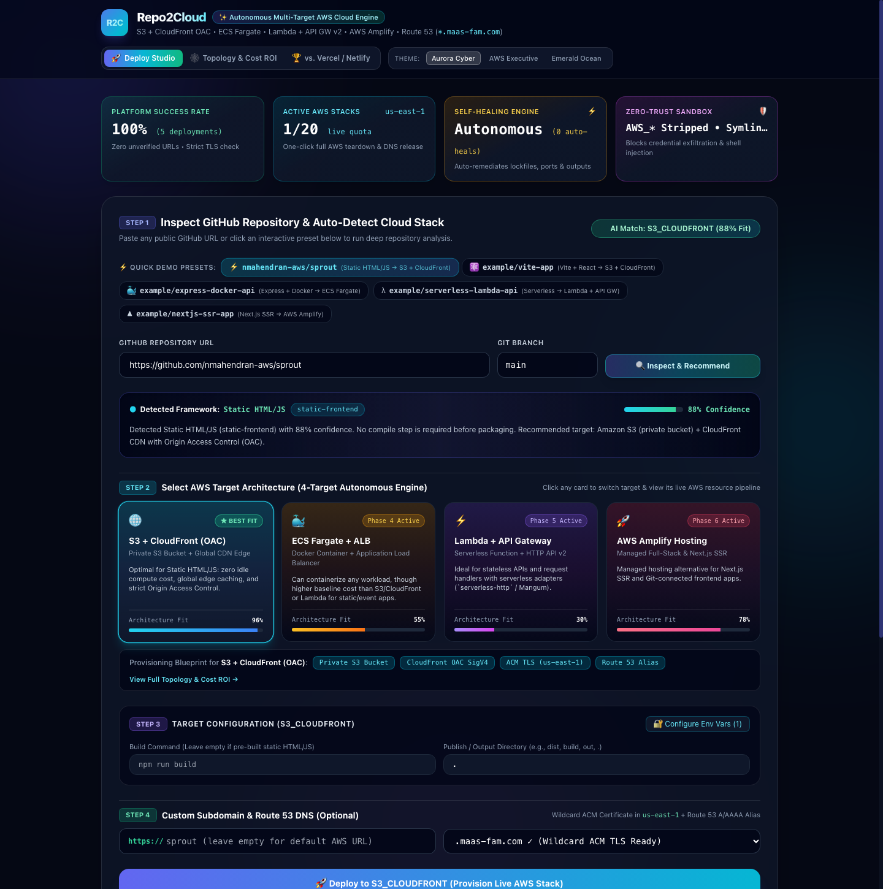

Paste a GitHub repo. Get a live HTTPS app on your own AWS account.
The one-click experience of Vercel, with the real cloud underneath. Built so students can ship — and learn AWS while they do.

Great developer experience, but:
Full power, but hours of setup:
Vercel-grade one-click experience on 100% native AWS infrastructure you own.
Detect stack and score 4 AWS targets
Security checks and cost quota
Isolated sandbox, keys stripped
Provision the best-fit AWS service
Route 53 + ACM HTTPS subdomain
URL shown only after health checks pass
QUEUED → ANALYZING → BUILDING → DEPLOYING → CONFIGURING_DOMAIN → VERIFYING → LIVE
Paste any public GitHub URL or pick a preset. Framework and confidence appear in seconds.
All four AWS targets are scored (S3 + CloudFront 96%, Amplify 78%, ECS 55%, Lambda 30% for a static site).
Pick a name on the shared domain, see availability instantly, deploy with one click.
Deploy Studio, Topology & Cost ROI, and a Vercel / Netlify comparison.
Vite, React, Vue, Astro. Private bucket fronted by CloudFront Origin Access Control.
Express, Fastify, FastAPI, long-running backends. Generates a hardened non-root Dockerfile if missing.
Event-driven APIs. Packages the bundle and provisions an HTTP API v2 stage.
Next.js App Router and full-stack apps. Generates amplify.yml for the compute branch.
A deterministic analyzer reads package.json, Dockerfile, serverless.yml, next.config and requirements.txt before anything is deployed.
| Capability | Repo2Cloud | Vercel | Netlify |
|---|---|---|---|
| Supported architectures | 4 native AWS targets | Static & serverless focus | Static & serverless focus |
| Long-running Docker containers | ECS Fargate + ALB | Execution time limits | Function time limits |
| Infrastructure ownership | Your AWS account | Their platform | Their platform |
| Pricing model | Raw AWS rates, no seat fee | Per seat + bandwidth | Per seat + bandwidth |
| Self-healing build recovery | Auto-fixes lockfile and output issues | Manual debugging | Manual config edits |
| Strict URL gate | TLS + Route 53 health probe first | URL shown early | URL shown early |
| Full resource teardown | S3, CloudFront, ECR, ECS, Lambda, DNS | Project delete | Site delete |
Vercel and Netlify are excellent frontend hosts. Repo2Cloud targets a different need: owning and learning the cloud. Comparison reflects the project team's research.
Every deploy creates S3, CloudFront, ECS or Lambda and Route 53 resources you can inspect in your own account.
It runs in your account, so AWS free tier and student credits apply. No platform seat fee.
Private buckets, AWS keys stripped from builds, input filtering, and a cap on live deployments.
One click tears down every resource and frees the subdomain for reuse.
Bonus: your project gets a real HTTPS domain you can put on a resume or portfolio.
Pick a preset, watch targets get scored
Cost ROI and topology view
Custom subdomain, live pipeline and logs
Live HTTPS site, then one-click cleanup
Thank you · Technica 2026 · Repo2Cloud